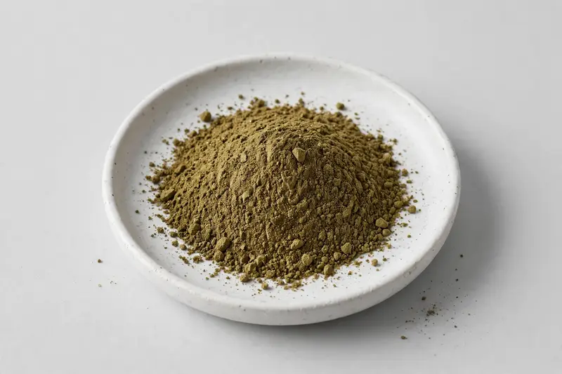

Guava leaf — quercetin and tannin botanical for digestive, beverage and cosmetic formulations.

Overview
Guava leaf extract comes from Psidium guajava leaf and is traded as a powder across digestive, beverage and cosmetic applications. Buyers most often request quercetin and tannin-related specifications. Demand is steady in the botanical tea and functional beverage space, with growing cosmetic interest. As a Xi'an-based trading company, we source through vetted partner producers — share your target spec and we confirm feasibility honestly.
Specifications below reflect commonly requested options in the market — not a stock list. Share your target spec and we'll confirm exactly what we can supply, honestly.
| Specification | Details |
|---|---|
| Botanical identity | Guava leaf extract powder (Psidium guajava leaf) |
| Marker compound | Commonly requested spec grades: quercetin content and tannin levels, sometimes standardized to a defined ratio — confirm against your target specification. |
| Appearance | Fine powder, color typical of the extract |
| Mesh size | Typically 80–100 mesh (confirm per inquiry) |
| Testing | COA/TDS arranged on request; scope agreed per your spec |
Applications
Documentation
We don't claim in-house labs or certifications we don't hold. COA and TDS documents can be arranged on request, and testing scope is agreed against your specification before supply.
FAQ
Related products
Panax ginseng
Key marker: Ginsenosides
View specs →Curcuma longa
Key marker: Curcuminoids
View specs →Nattokinase (fermented soybean enzyme)
Key marker: 20,000-40,000 FU/g
View specs →Harpagophytum procumbens
Key marker: Harpagoside Content
View specs →Moringa oleifera
Key marker: Protein Content
View specs →Send your target spec and volumes — we'll respond with a tailored quotation.
Request a Quote